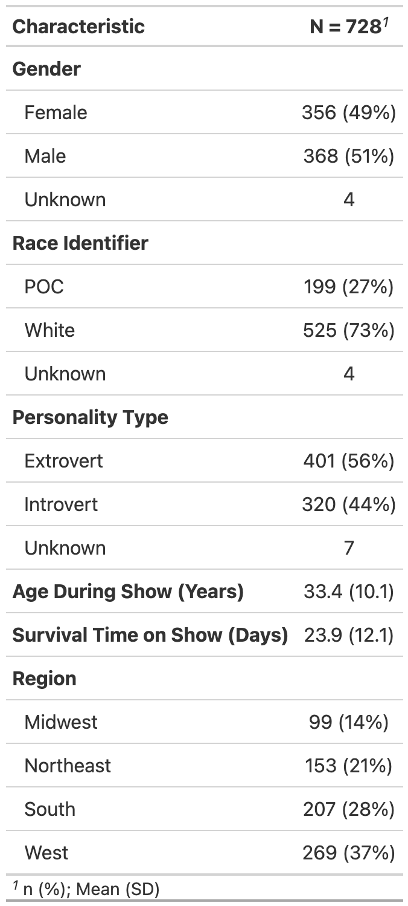
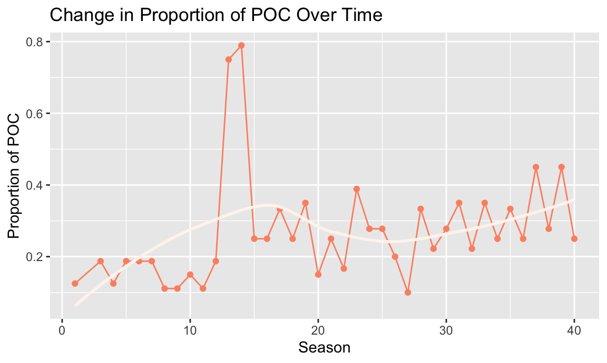

In this report, we utilize survival analysis to explore the implications of known race, gender, and personality type to game show survival. In particular, we focus on the American classic TV series Survivor, which is currently on its 43rd season. In each season of the show, 16 to 18 contestants are divided into tribes and navigate challenges within these social alliances in order to promote their own survival.1 Throughout each season, contestants are progressively eliminated by vote of their peers until there is a sole survivor. Given that aspects of identity heavily influence how people are perceived in a social context, we hypothesize that contestant outcomes may differ on the measures related to retention or screen time.
Our initial goal was to investigate the extent to which gender, race, and personality have led to differences in days survived on Survivor. Based on cultural norms in the U.S., we hypothesized that contestants who are white, male, or extroverts would have the longest survival time. In determining a lack of results on these measures, we decided to integrate geographic comparisons as well for survival time. More additional questions arose throughout the course of our research. We determined that another component of entertainment culture was not only how long the contestants stayed on the show, but how much individualized screen time they received while there. Thus, we decided to explore the frequency of confessionals as supplementary analyses. Finally, in more recent years (in alignment with the Black Lives Matter movement in the U.S.), Survivor has made the effort to encourage more diversity within their casts. To this end, we also wanted to visually see if contestants had representation that evolved over the 42 seasons. In this paper, we consider all these aspects as part of a comprehensive investigation of demographics on game show survival.
In order to analyze the show Survivor, we used data sources
from the castaway_details and castaways
datasets4, as well as others, from the
survivoR package.5 This fan-made package contains data from
all seasons of Survivor. According to the authors of the
package, “the data was sourced from Wikipedia and the Survivor Wiki.
Other data, such as the tribe colours, was manually recorded and entered
by myself and contributors.” As each dataset contained distinct
information on the contestants for each season, it was necessary to use
joins to combine datasets to produce a final dataset to be analyzed.
This was performed using a full join on the contestants’ full names. We
primarily rely on contestant occurrences as the unit of analysis in our
report, though it should be noted that distinct individuals can appear
in multiple seasons and/or in multiple episodes per season.
Additionally, in order to standardize our results for the survival
analysis and exploratory data analysis, we removed seasons 2, 41, 42,
and 43 as the seasons contained data for a different number of days from
the standard 39 days. As the original data contains information from
several versions around the globe, it was integral to filter and only
analyze data from the U.S. edition. In order to best model our
covariates of interest, we then created a new personality type variable
(extracting whether a person is an introvert or extrovert) and a POC
indicator variable (provided by the package) instead of individual
races. We also used contestants’ home states to code contestants into a
region based on census regions and divisions of the United States.6
Furthermore, we determined that missing data was not an issue, as it
occurred in low frequency and was not patterned in nature. The final
dataset used in the analysis contains unique information for each
castaway for each season, including the following key variables:
version_season: version and season numberfull_name: contestant full nameage_during_show : age, in yearspoc : POC indicator, if known. Else, marked as
White.gender: 2 levels: Female, Male.personality_type_binary : Extracted from the
Myer-Briggs personality type of the castaway. 2 levels: Extrovert,
Introvert.days_survived: Number of days survived in the show
until eliminationregion: region in the U.S. where the contestant is
from. We created this variable based on the state variable
available in the dataset. 4 levels: West, Midwest, Northeast, South.
Indicator variables for each of the 4 regions have also been created for
analyses.As a supplemental analysis, we also used the
confessionals data from the same survivoR
package to visualize the number of confessionals each contestant
received. This data looked at all seasons as it was unrelated to the
survival analysis and consistency in the datasets was not necessary.
Nevertheless, this data also only looked at the U.S. edition of the
show.
We performed exploratory data analysis to visualize the distributions of our variables of interest, including POC, gender, personality type, age, and geographic location. In order to best depict the true nature of our data, we used a combination of tables and plots, depending on which method we believed to be most effective. In our summary demographic table, we specifically count contestant occurrences, while noting that distinct individuals can recur across multiple seasons or episodes within a season.

Note: N = 728 refers to the total count of records
(i.e. contestant occurrences) in survivor_data_final;
distinct persons may be listed in multiple records, across seasons
and/or within seasons.
Additionally, we used a histogram plot to identify a right-skewed distribution in ages of contestants.
Note: Since contestants can re-appear across seasons at different
ages, we rely on discrete records from survivor_data_final
(i.e. contestant occurrences) as the unit of analysis for this plot in
order to ensure comprehensiveness of age data.
We also included tables showing the mean days survived based on these demographic measures of interest.
| Personality Type | Distinct Persons | Contestant Occurrences | Mean Days Survived |
|---|---|---|---|
| Extrovert | 309 | 401 | 24.0 |
| Introvert | 271 | 320 | 23.6 |
| POC Status | Distinct Persons | Contestant Occurrences | Mean Days Survived |
|---|---|---|---|
| POC | 164 | 199 | 22.6 |
| White | 418 | 525 | 24.3 |
| Gender | Distinct Persons | Contestant Occurrences | Mean Days Survived |
|---|---|---|---|
| Female | 292 | 356 | 23.1 |
| Male | 290 | 368 | 24.5 |
| Region | Distinct Persons | Contestant Occurrences | Mean Days Survived |
|---|---|---|---|
| Midwest | 84 | 99 | 24.4 |
| Northeast | 122 | 153 | 25.0 |
| South | 178 | 207 | 22.7 |
| West | 218 | 269 | 23.8 |
Next, to visualize the geographic origins of Survivor contestants, we created a map to chart the number of contestants coming from each state. This map indicates that California was the most popular state of origin for contestants.
Notes:
i) Seasons 2, 41, 42, and 43 have been removed from the exploratory
analysis due to inconsistent number of days.
ii) Since contestants can re-appear across seasons with different
states of residence, we similarly rely on discrete records from
survivor_data_final (i.e. contestant occurrences) as the
unit of analysis for this plot in order to ensure comprehensiveness of
location data.
Additionally, we used a line plot to visualize the change in diversity (looking at both POC status and gender) to view how the proportion of POC and women has changed over the show’s many seasons.

Note: Distinct person counts by POC status.
According to the trends of the proportion of POC, the initial seasons had a very low proportion of POC contestants and the overall data shows an increasing trend in the proportion of POC. It was interesting to note that some “early” seasons such as seasons 13 and 14 had very high proportions of POC (over 0.5).
Note: Distinct person counts by gender.
The graph for the proportion of women per season shows a relatively steady trend around 0.5, indicating a generally even distribution of men and women in the data. There are some seasons with a proportion less than 0.5, but a majority of seasons had an exact proportion of 0.5.
In addition to the aforementioned exploratory data analysis, we were curious to see which contestants were receiving the most confessionals. As a result, we created a Shiny app that allows users to select which season they would like to view. Users can then examine the number of confessionals each contestant received, as well as the total number of confessionals they received over the season, and the mean number of confessionals per episode they received while on the show.
For our statistical analysis, we used survival analysis to understand the time to elimination for Survivor contestants. In this method, we suppose that there is a true survival time, T, as well as a true censoring time, C. The survival time represents the time at which the event of interest occurs: in this dataset, the time (in days) at which participant is voted out. The censoring time is the time at which the participant drop out of the game show or survived until the last day of the show.
We observed the Survival Time T and Censoring Time C. Suppose there is a random variable Y
\[Y = min(T,C)\] In other words, if the event occurs before the censoring such that T \(<\) C, then we observed the true survival time T. If censoring occurs before the event such as T \(>\) C, then we observe the censoring time. The status indicator as,
\[\delta = \begin{cases} 1 & T\leq C \\ 0 & T > C \end{cases}\]
Thus, \(\delta\) = 1 if we observe the true survival time, and \(\delta\) = 0 if we observe the censoring.
We use the Cox-propositional hazard model to evaluate the effect of several factors on survival time in Survivor. It allows us to examine how specified factors influence the rate of the event that we are interested in at a particular point in time. This rate is the hazard rate. Covariates are age, gender, personality type, and region in this model. The Cox model is expressed by the hazard function denoted by h(t). Briefly, the hazard function can be interpreted as the risk of voted out at time t. It can be estimated as follow: \[h(t) = h_0(t)\exp(x_1\beta_1 + x_2\beta_2 + x_3\beta_3 + x_4\beta_4 + x_4\beta_5)\] where,
To investigate the number of days survived on Survivor, we built a Cox Proportional-Hazards Model adjusting for the variables of age, gender, personality type (introvert vs extrovert) and POC (White vs POC). The Cox Proportional-Hazards model was chosen since it allows us to examine multiple factors that could be influencing the rate at which contestants are eliminated. An assumption of the Cox Proportional-Hazards model is that each covariate has a multiplicative effect in the hazards function that is constant over time. After fitting the Cox model, we tested the assumption and none of the covariates in our model are in violation.
To investigate each of the covariates individually, we created Kaplan-Meier curves to look at survival time with respect to:
Figure 5: Personality Type (Introvert vs Extrovert)
Figure 6: POC (White vs Non-White)
Figure 7: Gender (Female vs Male)
Figure 8: Region
Figure 9: Northeast vs Non-Northeast Region Notes: Included only Northeast vs Non-Northeast plot due to non-significance of other pairwise survival comparisons
The results of our Cox Proportional-Hazards model are displayed below.
Table 3: Modeling Survival Time by Age, Gender, POC, Personality Type, Region
| Risk Factor | Parameter Estimate (Standard Error) | Hazard Ratio (HR) (95% CI) | P-Value |
|---|---|---|---|
| Age during show (years) | -0.00 (0.00) | 1.00 (0.99, 1.01) | 0.9538 |
| Gender | |||
| Female | Ref | ||
| Male | -0.05 (0.08) | 0.95 (0.81, 1.11) | 0.5003 |
| POC (person of color) | |||
| POC | Ref | ||
| White | -0.11 (0.09) | 0.89 (0.75, 1.07) | 0.2104 |
| Personality Type | |||
| Extrovert | Ref | Ref | |
| Introvert | 0.06 (0.08) | 1.07 (0.91, 1.25) | 0.4242 |
| Region | |||
| Midwest | Ref | ||
| Northeast | -0.00 (0.15) | 1.00 (0.75, 1.33) | 0.9880 |
| South | 0.26 (0.14) | 1.30 (1.00, 1.70) | 0.0528 |
| West | 0.17 (0.13) | 1.18 (0.91, 1.53) | 0.1989 |
Notes: N = 721, number of events = 626
As age increases in years, there is no difference in survival since
the hazard ratio is 1. We are 95% confident that the HR falls between
0.99 to 1.01. However, the HR is not statistically significant.
- For gender, the HR value of 0.96 suggests that the survival time for
male contestants is longer compared to female contestants (the reference
category). We are 95% confident that the HR falls between 0.82 and 1.12.
However, the HR is not statistically significant.
- For POC, the HR value of 0.89 would suggest that the survival time for
White contestants is longer compared to POC contestants (the reference
category). We are 95% confident that the HR falls between 0.75 and 1.06.
However, the HR is not statistically significant.
- For personality type, the HR value of 1.07 would suggest that the
survival time for introvert contestants is shorter compared to extrovert
contestants (the reference category). We are 95% confident that the HR
falls between 0.91 - 1.25. However, the HR is not statistically
significant.
- For region, Midwest is the reference category. However, all of these
hazard ratios are not statistically significant, p-value > 0.05.
* The HR value of 0.99 for Northeast suggests that the survival time for contestants from the NE is nearly equal to contestants from the Midwest.
* The HR value of 1.29 for the South suggests that the survival time for contestants from the South is shorter compared to contestants from the Midwest.
* The HR value of 1.18 for the West suggests that the survival time for contestants from the West is shorter compared to contestants from the Midwest. From conducting survival analyses, we did not observe any statistically significant covariates in the Cox-Proportional-Hazards model. This stands in contrast with our initial hypotheses that race, gender, and personality type would impact days survived. The hazard ratio values for gender (males surviving longer than female contestants), POC (White contestants surviving longer than POC), personality type (extrovert surviving longer than introverts) follow our general expectations. We also included region as a covariate in our final model without expecting that it would impact survival time. The indicator for South was nearly statistically significant (at alpha = 0.05), which could warrant further investigation. However, since none of the hazard ratios are statistically significant based on the current data, we cannot make any conclusions. Upon conducting analysis on the Kaplan-Meier curves to investigate each covariate individually, we discovered a marginally statistically significant (at alpha = 0.05) curve comparing contestants from the Northeast to those not from the Northeast. This indicates that it can be estimated that contestants from the Northeast tend to have overall better survival trajectories on the show than contestants not from the Northeast.
It is integral to note that these results do not necessarily reflect societal biases and difficulties individuals face on the show, as there are several limitations to the data. For example, individuals were only categorized as “POC” if there were known references to their racial backgrounds and categorized as “White” otherwise. This could potentially cause a bias towards the null as some individuals who are actually POC might have erroneously been categorized. Additionally, each season was relatively limited in the number of contestants with many seasons having around 20 contestants. In order to conduct the analysis, we removed some of the seasons from the show, which means that this analysis does not necessarily represent the show’s full cast. Finally, there are several “behind the scenes” factors that could affect how long contestants stay on the show, such as producer influence, that potentially influence the narratives on the show. Nevertheless, the show has taken several necessary steps to promote diversity on the show, such as including a higher proportion of POC in recent seasons compared to the original seasons as visualized in the exploratory data analysis. As of 2020, CBS (the show’s network) announced that reality TV shows must have 50% non-White casts and increased writing room diversity.7 Several years in the future, it would be interesting to expand this project to analyze survival times of POC before and after this change was implemented to see if survival times have improved. Another potential future analysis could involve determining if the number of confessionals (and length of screen time on the show) varies by race, gender, and age.
https://sphweb.bumc.bu.edu/otlt/mph-modules/bs/bs704_survival/BS704_Survival_print.html↩︎
https://cran.r-project.org/web//packages/survivoR/survivoR.pdf↩︎
https://www2.census.gov/geo/pdfs/maps-data/maps/reference/us_regdiv.pdf↩︎
https://www.cnbc.com/2020/11/09/cbs-reality-shows-must-now-have-50percent-non-white-casts-network-says.html↩︎